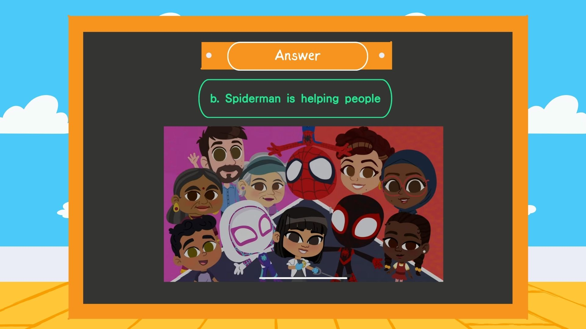
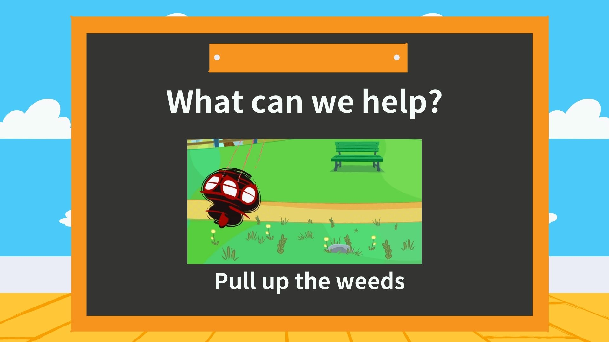
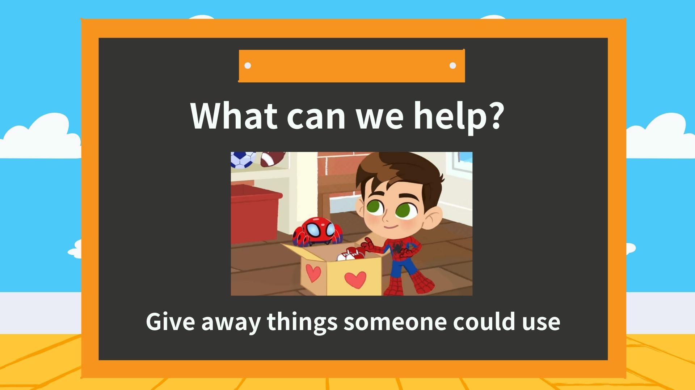

Summary (課程摘要):
1.請Murray念和寫abc字母表了解其發音及理解程度。
2.以蜘蛛人的影片闡述日常生活中如何幫助人，日常語句，單字，複數加s用法。
Conclusion(總結):Murray 的發音本身記的很熟，偶爾會有一些忘記，但提醒後便會想起。
手寫部分較不熟悉，有些大小寫不太出來，有空時可練習手寫字母部分。
注意！當名詞有兩個以上時要在後面＋Ｓ
補充說明：褲子或是鞋子本身在生活中就是以一對的方式出現，所以單字後本來就有S喔！
A:蜘蛛人在擊殺壞蛋 B:蜘蛛人再幫助人們。
撿垃圾
除雜草
將不要的東西給需要的人